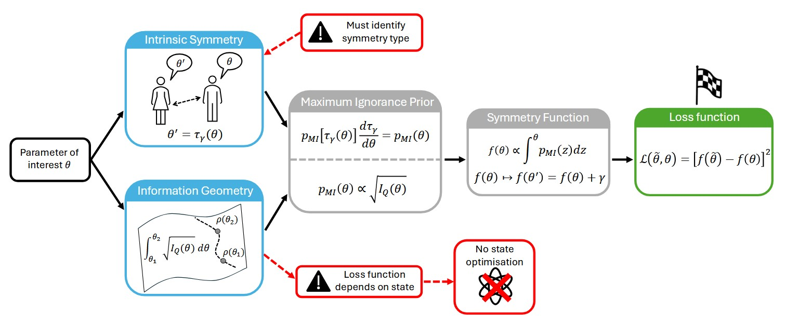

From preprint to print: symmetry and geometry in global sensing
Guildford, 21 December 2025
As 2025 comes to a close, a brief note on work released earlier this year: our paper On the role of symmetry and geometry in global quantum sensing appeared a few months ago in Quantum Sci. Technol., 10, 045053.
The core contribution is an operational recipe to compute symmetry functions for quantum estimation problems. These functions are the key objects needed to construct consistent loss functions and, therefore, to fix the optimisation criterion that defines what it means for estimators and POVMs to be optimal. Within the framework of location-isomorphic metrology, this construction enforces global consistency and uniquely constrains optimal solutions.
We show that carrying out this construction amounts, in practice, to identifying the appropriate notion of prior ignorance, which can be derived either from physically meaningful symmetries or from the geometry of state or likelihood spaces. This unifies a wide range of practically relevant estimation problems, including rate estimation, thermometry, scale and coherence estimation, well beyond standard phase estimation, which follows a different logic.

Once the optimality criterion is fixed in this way, symmetry-guided adaptive quantum sensing algorithms follow naturally, providing globally optimal estimators and measurement strategies under finite data and realistic experimental constraints.